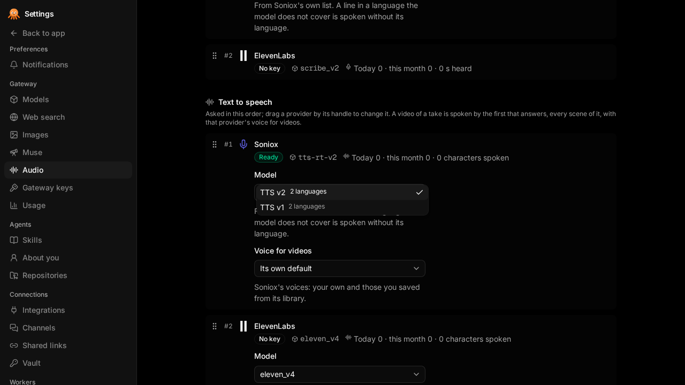

Issue #1285 on #1300's pickers: Soniox's models for each kind, its voices by name, and a speed for each Studio video
Playwright shots of web/tests/audio.spec.ts and web/tests/studio.spec.ts (head d691fa7a) against the fake client API, desktop and phone (Pixel 7), dark and light.
Soniox's model for each kind

desktop, dark: speech model list open (no transcription models in it)